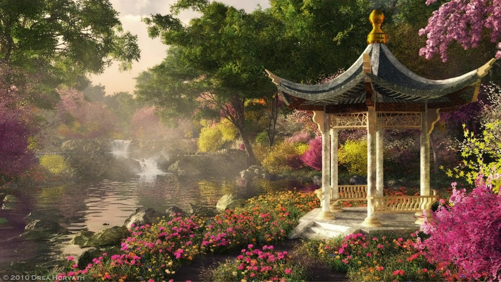
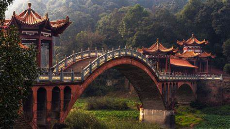

This is China

China,[i] officially the People's Republic of China (PRC),[j] is a country in East Asia. With a population exceeding 1.4 billion, it is the world's second-most populous country after India, representing 17.4% of the world population. China spans the equivalent of five time zones and borders fourteen countries by land.[k] With an area of nearly 9.6 million square kilometers (3,700,000 sq mi), it is the third-largest country by total land area.[l] The country is divided into 33 province-level divisions: 22 provinces,[m] five autonomous regions, four municipalities, and two semi-autonomous special administrative regions. Beijing is the country's capital, while Shanghai is its most populous city by urban area and largest financial center.

China is considered one of the cradles of civilization: the first human inhabitants in the region arrived during the Paleolithic; by the late second millennium BCE, the earliest dynastic states had emerged in the Yellow River basin. The eighth to third centuries BCE saw a breakdown in the authority of the Zhou dynasty, accompanied by the emergence of administrative and military techniques, literature, philosophy, and historiography. In 221 BCE, China was unified under an emperor for the first time. Appointed non-hereditary officials began ruling counties instead of the aristocracy, ushering in more than two millennia of imperial dynasties including the Qin, Han, Tang, Yuan, Ming, and Qing. With the invention of gunpowder and paper, the establishment of the Silk Road, and the building of the Great Wall, Chinese culture—including languages, traditions, architecture, philosophy and technology—flourished and has heavily influenced both its neighbors and lands further afield. However, China began to cede parts of the country in the late 19th century to various European powers by a series of unequal treaties.
After decades of struggle, the 1911 Revolution resulted in the overthrow of the monarchy and the establishment of the Republic of China (ROC) the following year. The country under the nascent Beiyang government was unstable and ultimately fragmented during the Warlord Era, which was ended upon the Northern Expedition conducted by the Kuomintang (KMT) to reunify the country. The Chinese Civil War began in 1927, when KMT forces purged members of the rival Chinese Communist Party (CCP), who proceeded to engage in sporadic fighting against the KMT-led Nationalist government. Following the country's invasion by the Empire of Japan in 1937, the KMT and CCP temporarily agreed to a truce in favor of a united front against the Japanese. The Second Sino-Japanese War eventually ended in a Chinese victory; however, atrocities such as the Nanjing Massacre had a lasting impact on the country. The end of war with Japan in 1945 was quickly followed by a resumption of hostilities between the KMT and CCP. In 1949, the resurgent Communists established control over most of the country, proclaiming the People's Republic of China and forcing the Nationalist government to retreat to the island of Taiwan.